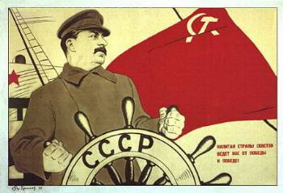

1930-1940
Soviet Union from 1930 to 1940

(Efimov 1933)
By the beginning of the 1930s, Stalin was in full in control of Soviet Union. He mercilessly supressed his opponenents. 30s were characterized by Red Terror, or Stalinshina, which took millions of lives.
Stalin's Industralization drive continued with the Second Five Year Plan. Soviet Union achieved a remarkable, 12% to 13% rate of annual industrial growth during this period. However, the Soviet people had to pay dear price for this rapid industralization. Red Army confiscated grain forcefully from the peasants, to finance the industalization. As a result, there was famine in the regions such Ukraine, where most grain was produced.
Socialist Realism
In 34, Socialist Realism was declared as the only acceptable approach to literature, as Communist Party moved to strenthen its control over all aspects of life in Soviet Union. Stalin considered as an important tool in shaping people's mind within the framework of the party ideology. Communist Party dictated compliance through Union of Soviet Writers was established in 1932.
Click here to view Socialist Realist Paintings, Posters
Red Terror
Purges of 30ies started with the assasination of Kirov, who was the leader of Communist Party in Leningrad. Stalin arrested innocent people on made up charges and using torture made them confide to crimes they did not commit. Thousands were shot or sent to Gulag, where they died under intolerable conditions of the labor camp. Some estimate that about 20 million people died in Red Terror.
Read about Gulag, by Solzhenitsyn in Russian. (use KOI8-R font). Learn about victims of Stalin's purge in Belorussia.
In 1940 Stalin was named the Man of the Year by Times magazine